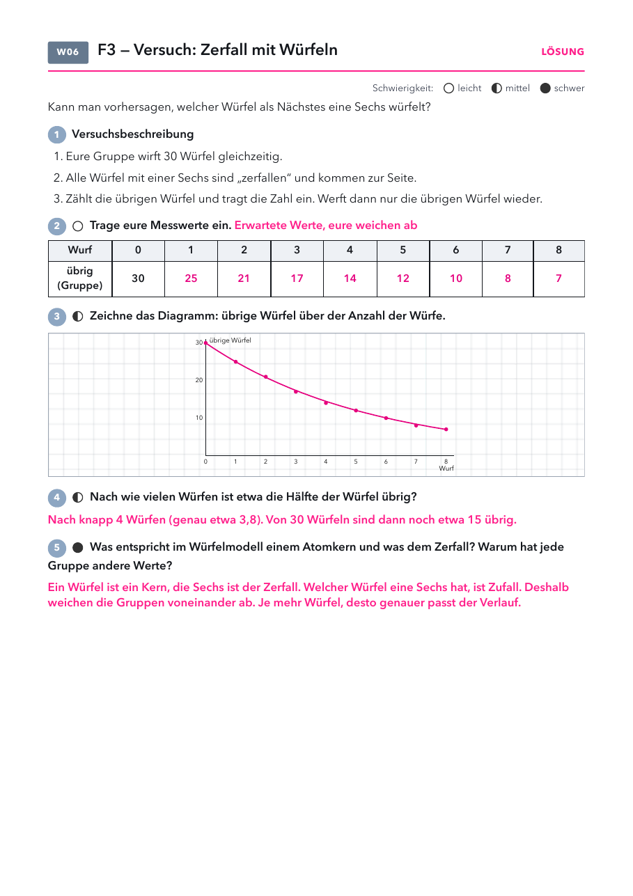

- Versuchsblatt Zerfall mit Würfeln: Seite 1, eins pro Schüler.
- Folien und Lösungen: nicht drucken.
Material
Demo (für dich)
| Material | Anzahl | Hinweis |
|---|---|---|
| nicht nötig | ||
Schülerversuch (pro Gruppe)
| Material | Anzahl | Hinweis |
|---|---|---|
| Würfel | 30× | aus der Mathe-Sammlung |
| Würfelbecher oder Schale | 1× |
Die Werte aller Gruppen an der Tafel addieren.
Die Stunde
1 · Abschluss Leitfrage 2
2 · Einstieg Leitfrage 3
3 · Versuch
4 · Alltag
1
Abschluss Leitfrage 2
Antwort ins Heft, Check.
Antwort ins Heft, Check.
2
Einstieg Leitfrage 3
Würfel, Vermutungen.
Würfel, Vermutungen.
3
Versuch
Würfelversuch in Gruppen, Diagramm.
Würfelversuch in Gruppen, Diagramm.
4
Alltag
Zufall im Einzelnen, sicher in der Menge.
Zufall im Einzelnen, sicher in der Menge.
Folie 1
Antwort auf Leitfrage 2
Warum zerfallen manche Atomkerne von selbst?
Weil sie instabil sind: Das Verhältnis von Protonen zu Neutronen passt
nicht. Der Kern wandelt sich spontan in einen stabileren um und gibt dabei
α-, β- oder γ-Strahlung ab. Massenzahl und Ladung bleiben dabei erhalten.
Folie 2
Check zu Leitfrage 2
1) Ein Kern sendet ein α-Teilchen aus. Wie ändern sich A und Z?
- A minus 4, Z minus 2
- A minus 2, Z minus 4
- A bleibt, Z plus 1
- Beide bleiben gleich
2) Welche Strahlung wird von einem Blatt Papier gestoppt?
- γ-Strahlung
- β-Strahlung
- α-Strahlung
- Keine davon
Folie 3
Lösung
1) a 2) c
Folie 4
Beobachte
Niemand weiß, welcher Würfel als Nächstes fällt. Über die Menge ist der Verlauf trotzdem sicher.
Folie 5
Leitfrage 3
Wie schnell zerfällt ein radioaktiver Stoff?

Was vermutest du? Wir sammeln eure Vermutungen.
Folie 6 · Schülerblatt mit Lösung
📄 Versuchsblatt austeilen · 30 Würfel pro Gruppe

Folie 7
Zufall im Einzelnen, sicher in der Menge
| im Alltag | was man sieht | warum |
|---|---|---|
| Popcorn | Welches Korn zuerst platzt, weiß keiner. | Nach drei Minuten sind trotzdem fast alle aufgeplatzt. |
| Glühlampen einer Lieferung | Jede hält unterschiedlich lange. | Der Hersteller kennt trotzdem die mittlere Lebensdauer. |
| Würfel im Versuch | Welcher Würfel eine Sechs hat, ist Zufall. | Pro Wurf fällt trotzdem etwa ein Sechstel weg. |
Frage: Warum kann man für einen einzelnen Kern nichts vorhersagen, für ein ganzes Präparat aber schon?
Abschluss Leitfrage 2
- Die Antwortfolie ins Heft, der Check per Handzeichen. Lösung: 1 a, 2 c.
- Wer die Zerfallsgleichungen noch nicht sicher kann: Übung im Strahlungslabor.
Das Würfelmodell
- Jede Runde fällt im Mittel ein Sechstel weg, übrig bleiben 5/6. Nach etwa 3,8 Würfen ist die Hälfte weg. Das ist die „Halbwertszeit“ des Modells.
- Die Gruppenwerte streuen stark. Die Summe der ganzen Klasse passt viel besser zur Kurve. Deshalb die Klassenwerte an der Tafel addieren.
- Grenze des Modells: Echte Kerne zerfallen nicht in Runden, sondern zu jedem beliebigen Zeitpunkt. Die Wahrscheinlichkeit pro Zeit ist aber genauso fest.
- Typische Fehlvorstellungen: Nach zwei Halbwertszeiten ist alles zerfallen. Ein Kern, der lange nicht zerfallen ist, ist „bald dran“.
Material
- Würfel aus der Mathe-Sammlung. Alternative: 30 Münzen pro Gruppe, „Zahl“ scheidet aus. Dann halbiert sich die Zahl schon pro Wurf.
Zerfallslabor
Labor öffnen100 Würfel Wurf für Wurf, drei Zufallsserien, dazu der Zerfall von Fluor-20 als Animation mit Uhr und Messpunkten (nach der LEIFI-Animation).
Versuchsblatt Zerfall mit Würfeln
PDF öffnenLösung: Erwartete Werte 30, 25, 21, 17, 14, 12, 10, 8, 7. Hälfte nach knapp 4 Würfen. Würfel = Kern, Sechs = Zerfall, die Abweichung kommt vom Zufall.